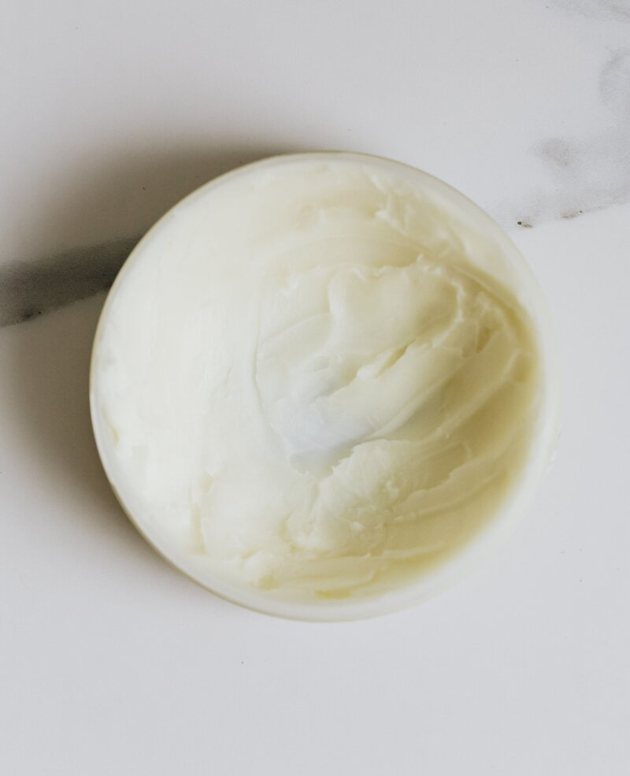

You don't need a chemistry degree to understand what's in your soap. Most of what's on the label is there to sell the bar — not to clean your skin. The ingredients that actually matter are a short list, and once you know what to look for, you can scan a label in about ten seconds.

True soap vs. detergent bars
The first thing to understand: not everything sold as "soap" is soap.
Real soap is made from fats and oils combined with an alkali — traditionally lye. On the label, these show up as saponified oils. "Sodium cocoate" is coconut oil that's been turned into soap. "Sodium tallowate" is beef fat soap. "Sodium olivate" is olive oil soap. These are the backbone of a good bar — and you'll find them right at the top of the ingredients list.
Detergent bars — often labeled "beauty bar," "cleansing bar," or "body bar" — use synthetic detergents instead of saponified oils. They're not necessarily worse. Dove, for example, is a detergent bar, and it's one of the mildest cleansers available. The label distinction matters more for understanding what you're buying than for judging quality. If you have reactive skin, a syndet bar might actually be gentler than true soap.
The ingredients that matter
Sodium tallowate — saponified beef fat. This has been the classic soap base for centuries. It produces a creamy, gentle lather and is well-tolerated by most skin types. If you see this as the first ingredient, you're holding a traditional, no-nonsense bar.
Glycerin — a humectant that draws moisture to your skin. It's created naturally during the soapmaking process, though some commercial manufacturers remove it and sell it separately. Soaps that retain their glycerin are noticeably more moisturizing.
Sodium cocoate — coconut oil soap. Great lather, very cleansing. But on its own it can be stripping. A good bar uses it in balance with gentler oils like tallow or olive.
What to skip
Fragrance / parfum. This is the most common skin irritant in soap — and the label won't tell you whether it's natural or synthetic, because it's legally allowed to be either. If your skin reacts to soaps, "fragrance" is almost always the culprit. Look for "unscented" or "fragrance-free" on the label — these aren't marketing terms, they mean the product contains no added fragrance compounds.
Titanium dioxide. A white pigment that makes soap opaque and bright white. It has zero cleansing function. It's there because the manufacturer decided pure white sells better than the bar's natural color. You can skip it entirely, and your skin won't notice the difference.
Sodium lauryl sulfate (SLS). A strong detergent that creates lots of foam. It's an aggressive oil-stripper — fine in hand soap if you don't react, but too harsh for most faces and bodies.
Why "natural" doesn't mean gentle
Castile soap — pure olive oil soap — is about as natural as it gets. It's also one of the harshest soaps for daily use on skin. The reason is pH. Traditional soaps are alkaline, with a pH of 9–10. Healthy skin sits around 5.5. That gap is why true soap can leave your skin feeling tight and dry — it temporarily disrupts the acid mantle that protects your skin barrier.
This is not an argument against natural ingredients. It's an argument for paying attention to what your skin actually tells you. A Dove Unscented bar may have more ingredients on the label than a handmade castile — but its pH is matched to skin, and for a lot of people, that means less irritation. "Natural" describes the source of the ingredients. "Compatible" describes how your skin reacts. They're not the same thing.
The full Simple Body Care Guide covers all five soap types side by side (with brand examples for each), how to build a simple daily routine, a DIY-vs-buy breakdown of what's actually worth making, five full recipes (tallow balm, infused oils, salves, deodorant, and bath salts), and a tear-out quick reference card for the bathroom shelf.
Simple Body Care Guide on Etsy →